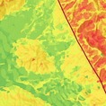
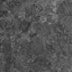

Services
Geological Services
ARTL: GIS Consulting specializes in comprehensive geological services, focusing on geological engineering and geomorphological mapping. Leveraging cutting-edge technologies and the expertise of skilled geologists, we conduct meticulous surveys for diverse projects, including dam construction in Surata. From pinpointing strategic locations to conducting in-depth geological assessments, we collaborate closely with clients to tailor our solutions to the specific challenges of each project, utilizing tools such as Geographic Information Systems (GIS) for informed decision-making.
Beyond construction endeavours, we are pivotal in assessing natural hazards in regions like Bolivar and Cienaga Zapatosa. Our adept geologists contribute invaluable insights to environmental management by offering detailed information on potential geological threats. This capacity to assess and anticipate natural risks is paramount for sustainable development and community safety in these areas, underscoring our commitment to environmental responsibility.
More about our Geological Services here
Geophysical Solutions
At the forefront of our expertise are geophysical services that harness state-of-the-art technology to explore the Earth's subsurface and physical characteristics comprehensively. Employing cutting-edge methods such as seismic surveys, gravity measurements, and electromagnetic studies, our geophysicists meticulously gather crucial data that serves many industries. From facilitating energy exploration initiatives to aiding in environmental monitoring endeavours, our geophysical services play a pivotal role in providing insights into the Earth's subsurface dynamics.
Our commitment to excellence is reflected in the diverse applications of our geophysical solutions. These span resource exploration, enabling industries to identify and extract valuable commodities, seismic hazard assessment, and ensuring the safety of infrastructure and communities. The data derived from our advanced geophysical techniques enhances our understanding of the Earth's interior and serves as a cornerstone for informed decision-making across various sectors. Our geophysical services are a cornerstone in uncovering valuable information about the Earth's subsurface, thus supporting a wide range of applications critical for industries and environmental management alike.
More about our Geophysic Solutions here
Telemetry and Wildlife Tracking
Within our suite of geospatial services, a key area of specialization lies in telemetry services, explicitly focusing on wildlife tracking. Leveraging cutting-edge technology that encompasses GPS tracking, Iridium satellite tracking, and advanced digital circuitry, we excel in remotely monitoring and collecting data from even the most inaccessible locations. The application of our telemetry services is mainly instrumental in wildlife research, enabling a comprehensive examination of animal movements, migration patterns, and ecological interactions.
The significance of our telemetry services extends beyond research, playing a pivotal role in supporting conservation initiatives and environmental monitoring efforts. Our telemetry services offer real-time data transmission and analysis capabilities, whether applied to ecological studies, habitat preservation endeavours, or ongoing wildlife conservation projects. This ensures that decision-makers are equipped with timely and accurate information, empowering them to make informed choices that contribute to the effective management of ecosystems and biodiversity protection.
More about our Telemetry and Wildlife Tracking services here
Earth and Space
Our Earth and Space services capabilities encompass advanced weather monitoring and prediction, employing state-of-the-art technology to analyze satellite imagery, including the classification of landscapes post-natural disasters, enhancing our ability to respond effectively to environmental challenges. Our expertise extends beyond Earth as we conduct transit suitability analyses, identifying regions with potential for GO Transit expansion. Furthermore, our Mission Level Phase 0 Proposal for the Io Geothermal Orbital Observation Satellite exemplifies our involvement in space mission and design. This ambitious initiative is geared towards providing in-depth observations of Jupiter's moon, Io, with a specific focus on analyzing its volcanic activity. Leveraging knowledge and software adapted from studying Earth's well-documented volcanoes, we aim to contribute valuable insights to our understanding of celestial bodies.
In alignment with our commitment to accessibility and knowledge dissemination, we actively provide informative PDFs on our website. These resources enrich content, offering stakeholders and the public a deeper understanding of our Earth and Space services. By combining cutting-edge technology with a dedication to sharing knowledge, we strive to contribute to advancements in Earth and space exploration and to the broader understanding of these domains for enthusiasts, researchers, and decision-makers alike.
More about our Earth and Space services here